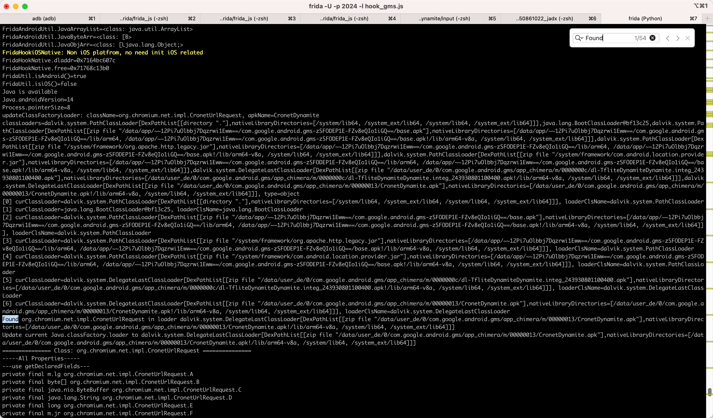
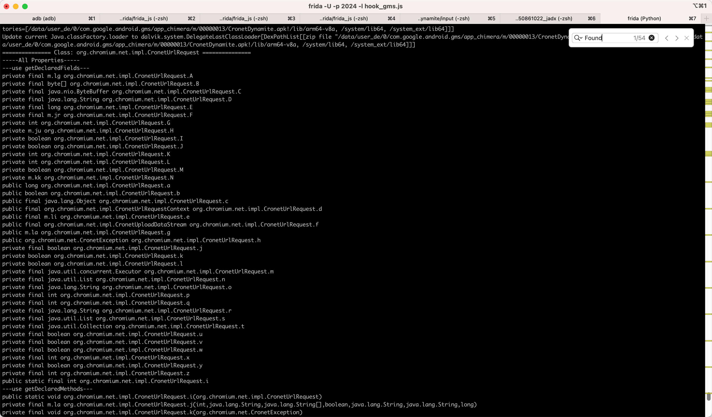

Error java.lang.ClassNotFoundException Didn't find class on path DexPathList zip file
情况1：类名错了
- 现象
hook报错：
Error: java.lang.ClassNotFoundException: Didn't find class zzz.xxx on path: DexPathList[[zip file
即：找不到类名
原因：类名写错了
根本原因：
- 之前Jadx反编译出的源码中的文件名
sources/zzz/xxx.java中的xxx不是真正的类名 - 而注释中
renamed from: yyy才是真正的类名
- 之前Jadx反编译出的源码中的文件名
解决办法：把名字改为真正的Java的类名：
yyy
情况2：类不在当前hook的二进制中
- 背景
安卓逆向期间，去根据之前Logcat日志：
2023-08-31 10:26:23.911 6481-6481 AppButtonsPrefCtl com.android.settings D Stopping package com.wallpaper.hd.funny
找到了安卓内部的类：com.android.server.pm.Settings中的函数：createNewSetting，输出了上述的log
- 现象
去Frida中用js代码：
var SettingsCls = Java.use("com.android.server.pm.Settings")
去hook安卓内部的类：com.android.server.pm.Settings
frida -U -f com.android.settings -l hook_360Wallpaper.js
报错：
Error: java.lang.ClassNotFoundException: Didn't find class "com.android.server.pm.Settings" on path: DexPathList[[zip file "/system_ext/priv-app/SettingsGoogle/SettingsGoogle.apk"],nativeLibraryDirectories=[/system_ext/priv-app/SettingsGoogle/lib/arm64, /system/lib64, /system_ext/lib64, /system/lib64, /system_ext/lib64]]
at <anonymous> (frida/node_modules/frida-java-bridge/lib/env.js:124)
at <anonymous> (frida/node_modules/frida-java-bridge/lib/class-factory.js:502)
at value (frida/node_modules/frida-java-bridge/lib/class-factory.js:945)
at value (frida/node_modules/frida-java-bridge/lib/class-factory.js:950)
at _make (frida/node_modules/frida-java-bridge/lib/class-factory.js:165)
at use (frida/node_modules/frida-java-bridge/lib/class-factory.js:62)
at use (frida/node_modules/frida-java-bridge/index.js:258)
at <anonymous> (/Users/crifan/dev/dev_root/androidReverse/keepAlive/360Wallpaper/dynamicDebug/Frida/frida/hook_360Wallpaper.js:139)
at <anonymous> (frida/node_modules/frida-java-bridge/lib/vm.js:12)
at _performPendingVmOps (frida/node_modules/frida-java-bridge/index.js:250)
at <anonymous> (frida/node_modules/frida-java-bridge/index.js:242)
at apply (native)
at ne (frida/node_modules/frida-java-bridge/lib/class-factory.js:673)
at <anonymous> (frida/node_modules/frida-java-bridge/lib/class-factory.js:651)

- 原因
- 此处安卓系统的app：设置，包名：
com.android.settings - 好像没包含，此处输出的Stopping package的日志的代码：
- 类
com.android.server.pm.Settings的 函数createNewSetting - 因为是另外的二进制程序
system_server才包含此函数
- 此处安卓系统的app：设置，包名：
- 解决办法
经过实测，换system_server去hook，即可找到。
- 具体步骤
frida -U -n system_server -l hook_360Wallpaper.js
即可找到该类，正常输出：
SettingsCls=<class: com.android.server.pm.Settings>
情况3：不能用当前classLoader，要换classLoader才能找到
问题=现象
Frida的hook代码：
static CronetUrlRequest() {
var clsName_CronetUrlRequest = "org.chromium.net.impl.CronetUrlRequest"
FridaAndroidUtil.printClassAllMethodsFields(clsName_CronetUrlRequest)
var cls_CronetUrlRequest = Java.use(clsName_CronetUrlRequest)
console.log("cls_CronetUrlRequest=" + cls_CronetUrlRequest)
...
但是报错，找不到类：
Error: java.lang.ClassNotFoundException
Error: java.lang.ClassNotFoundException: Didn't find class "CronetUrlRequest" on path: DexPathList[[zip file "/data/app/~~12Pi7uOlbbj7Dqzrwi1Eww==/com.google.android.xxx-zSFODEP1E-FZv8eQIo1iGQ==/base.apk"],nativeLibraryDirectories=[/data/app/~~12Pi7uOlbbj7Dqzrwi1Eww==/com.google.android.xxx-zSFODEP1E-FZv8eQIo1iGQ==/lib/arm64, /data/app/~~12Pi7uOlbbj7Dqzrwi1Eww==/com.google.android.xxx-zSFODEP1E-FZv8eQIo1iGQ==/base.apk!/lib/arm64-v8a, /system/lib64, /system_ext/lib64]]
at <anonymous> (frida/node_modules/frida-java-bridge/lib/env.js:124)
at <anonymous> (frida/node_modules/frida-java-bridge/lib/class-factory.js:502)
at value (frida/node_modules/frida-java-bridge/lib/class-factory.js:949)
at value (frida/node_modules/frida-java-bridge/lib/class-factory.js:954)
at _make (frida/node_modules/frida-java-bridge/lib/class-factory.js:165)
at use (frida/node_modules/frida-java-bridge/lib/class-factory.js:62)
at use (frida/node_modules/frida-java-bridge/index.js:256)
at enumProperties (/Users/crifan/dev/dev_root/androidReverse/xxx/xxx/xxx_v250861022/dynamicDebug/frida/frida_js/hook_xxx.js:2335)
at printClassAllMethodsFields (/Users/crifan/dev/dev_root/androidReverse/xxx/xxx/xxx_v250861022/dynamicDebug/frida/frida_js/hook_xxx.js:2353)
at CronetUrlRequest (/Users/crifan/dev/dev_root/androidReverse/xxx/xxx/xxx_v250861022/dynamicDebug/frida/frida_js/hook_xxx.js:5886)
at hookApp_AndroidJava (/Users/crifan/dev/dev_root/androidReverse/xxx/xxx/xxx_v250861022/dynamicDebug/frida/frida_js/hook_xxx.js:30797)
at hookApp (/Users/crifan/dev/dev_root/androidReverse/xxx/xxx/xxx_v250861022/dynamicDebug/frida/frida_js/hook_xxx.js:30975)
at <anonymous> (/Users/crifan/dev/dev_root/androidReverse/xxx/xxx/xxx_v250861022/dynamicDebug/frida/frida_js/hook_xxx.js:30995)
at <anonymous> (frida/node_modules/frida-java-bridge/lib/vm.js:12)
at _performPendingVmOps (frida/node_modules/frida-java-bridge/index.js:248)
at <anonymous> (frida/node_modules/frida-java-bridge/index.js:223)
at <anonymous> (frida/node_modules/frida-java-bridge/lib/vm.js:12)
at _performPendingVmOpsWhenReady (frida/node_modules/frida-java-bridge/index.js:242)
at perform (frida/node_modules/frida-java-bridge/index.js:202)
at hookAndroid (/Users/crifan/dev/dev_root/androidReverse/xxx/xxx/xxx_v250861022/dynamicDebug/frida/frida_js/hook_xxx.js:30998)
at apply (native)
at <anonymous> (frida/runtime/core.js:51)
原因
此处内部是用了另外的机制classLoader，去加载此类，导致此处默认的方式，找不到此类
解决办法
去换用别的特定的classLoader，即可正常加载该类，即可找到该类
具体代码
class FridaAndroidUtil{
static findClassLoader(className){
var foundClassLoader = null
const classLoaders = Java.enumerateClassLoadersSync()
// console.log("classLoaders=" + classLoaders + ", type=" + (typeof classLoaders))
for (const loaderIdx in classLoaders) {
var curClassLoader = classLoaders[loaderIdx]
// var loaderClsName = FridaAndroidUtil.getJavaClassName(curClassLoader)
// console.log(`[${loaderIdx}] loaderClsName=${loaderClsName}, curClassLoader=${curClassLoader}`)
try {
if (curClassLoader.findClass(className)){
// var loaderStr = curClassLoader.toString()
// console.log(`Found ${className} in loader ${loaderStr}`)
// Found org.chromium.net.impl.CronetUrlRequest in loader dalvik.system.DelegateLastClassLoader[DexPathList[[zip file "/data/user_de/0/com.google.android.xxx/app_chimera/m/00000013/CronetDynamite.apk"],nativeLibraryDirectories=[/data/user_de/0/com.google.android.xxx/app_chimera/m/00000013/CronetDynamite.apk!/lib/arm64-v8a, /system/lib64, /system_ext/lib64]]]
// if (loaderStr.includes(apkName)){
// // console.log(`Update current Java.classFactory.loader to ${loaderStr}`)
// Java.classFactory.loader = curClassLoader
// break
// }
console.log(`Found ${className} in loader ${curClassLoader}`)
foundClassLoader = curClassLoader
break
}
} catch (err){
// console.log(`${err}`)
}
}
console.log(`findClassLoader: className=${className} => foundClassLoader=${foundClassLoader}`)
return foundClassLoader
}
static setClassLoder(newClassLoader){
var oldClassLoader = Java.classFactory.loader
console.log(`oldClassLoader=${oldClassLoader}`)
Java.classFactory.loader = newClassLoader
console.log(`Set ClassLoader to ${newClassLoader}`)
}
static updateClassLoader(className){
var foundClassLoader = FridaAndroidUtil.findClassLoader(className)
// console.log(`foundClassLoader=${foundClassLoader}`)
if(foundClassLoader) {
FridaAndroidUtil.setClassLoder(foundClassLoader)
}
}
}
static CronetUrlRequest() {
var clsName_CronetUrlRequest = "org.chromium.net.impl.CronetUrlRequest"
FridaAndroidUtil.updateClassLoader(clsName_CronetUrlRequest)
// FridaAndroidUtil.printClassAllMethodsFields(clsName_CronetUrlRequest)
var cls_CronetUrlRequest = Java.use(clsName_CronetUrlRequest)
console.log("cls_CronetUrlRequest=" + cls_CronetUrlRequest)
// FridaHookAndroidJava.CronetUrlRequest_origCode(cls_CronetUrlRequest)
}
日志：
Found org.chromium.net.impl.CronetUrlRequest in loader dalvik.system.DelegateLastClassLoader[DexPathList[[zip file "/data/user_de/0/com.google.android.xxx/app_chimera/m/00000013/CronetDynamite.apk"],nativeLibraryDirectories=[/data/user_de/0/com.google.android.xxx/app_chimera/m/00000013/CronetDynamite.apk!/lib/arm64-v8a, /system/lib64, /system_ext/lib64]]]
findClassLoader: className=org.chromium.net.impl.CronetUrlRequest => foundClassLoader=dalvik.system.DelegateLastClassLoader[DexPathList[[zip file "/data/user_de/0/com.google.android.xxx/app_chimera/m/00000013/CronetDynamite.apk"],nativeLibraryDirectories=[/data/user_de/0/com.google.android.xxx/app_chimera/m/00000013/CronetDynamite.apk!/lib/arm64-v8a, /system/lib64, /system_ext/lib64]]]
foundClassLoader=dalvik.system.DelegateLastClassLoader[DexPathList[[zip file "/data/user_de/0/com.google.android.xxx/app_chimera/m/00000013/CronetDynamite.apk"],nativeLibraryDirectories=[/data/user_de/0/com.google.android.xxx/app_chimera/m/00000013/CronetDynamite.apk!/lib/arm64-v8a, /system/lib64, /system_ext/lib64]]]
oldClassLoader=dalvik.system.PathClassLoader[DexPathList[[zip file "/data/app/~~12Pi7uOlbbj7Dqzrwi1Eww==/com.google.android.xxx-zSFODEP1E-FZv8eQIo1iGQ==/base.apk"],nativeLibraryDirectories=[/data/app/~~12Pi7uOlbbj7Dqzrwi1Eww==/com.google.android.xxx-zSFODEP1E-FZv8eQIo1iGQ==/lib/arm64, /data/app/~~12Pi7uOlbbj7Dqzrwi1Eww==/com.google.android.xxx-zSFODEP1E-FZv8eQIo1iGQ==/base.apk!/lib/arm64-v8a, /system/lib64, /system_ext/lib64]]]
Set ClassLoader to dalvik.system.DelegateLastClassLoader[DexPathList[[zip file "/data/user_de/0/com.google.android.xxx/app_chimera/m/00000013/CronetDynamite.apk"],nativeLibraryDirectories=[/data/user_de/0/com.google.android.xxx/app_chimera/m/00000013/CronetDynamite.apk!/lib/arm64-v8a, /system/lib64, /system_ext/lib64]]]
附录日志
另外贴上，优化代码期间：
static updateClassFactoryLoader(className, apkName){
console.log(`updateClassFactoryLoader: className=${className}, apkName=${apkName}`)
const classLoaders = Java.enumerateClassLoadersSync()
console.log("classLoaders=" + classLoaders + ", type=" + (typeof classLoaders))
for (const loaderIdx in classLoaders) {
var curClassLoader = classLoaders[loaderIdx]
var loaderClsName = FridaAndroidUtil.getJavaClassName(curClassLoader)
console.log(`[${loaderIdx}] curClassLoader=${curClassLoader}, loaderClsName=${loaderClsName}`)
try {
if (curClassLoader.findClass(className)){
var loaderStr = curClassLoader.toString()
console.log(`Found ${className} in loader ${loaderStr}`)
if (loaderStr.includes(apkName)){
console.log(`Update current Java.classFactory.loader to ${loaderStr}`)
Java.classFactory.loader = curClassLoader
break
}
}
} catch (err){
// console.log(`${err}`)
}
}
var clsName_CronetUrlRequest = "org.chromium.net.impl.CronetUrlRequest"
FridaHookAndroidJava.updateClassFactoryLoader(clsName_CronetUrlRequest, "CronetDynamite")
FridaAndroidUtil.printClassAllMethodsFields(clsName_CronetUrlRequest)
...
输出的效果：
updateClassFactoryLoader: className=org.chromium.net.impl.CronetUrlRequest, apkName=CronetDynamite
classLoaders=dalvik.system.PathClassLoader[DexPathList[[directory "."],nativeLibraryDirectories=[/system/lib64, /system_ext/lib64, /system/lib64, /system_ext/lib64]]],java.lang.BootClassLoader@bf13c25,dalvik.system.PathClassLoader[DexPathList[[zip file "/data/app/~~12Pi7uOlbbj7Dqzrwi1Eww==/com.google.android.xxx-zSFODEP1E-FZv8eQIo1iGQ==/base.apk"],nativeLibraryDirectories=[/data/app/~~12Pi7uOlbbj7Dqzrwi1Eww==/com.google.android.xxx-zSFODEP1E-FZv8eQIo1iGQ==/lib/arm64, /data/app/~~12Pi7uOlbbj7Dqzrwi1Eww==/com.google.android.xxx-zSFODEP1E-FZv8eQIo1iGQ==/base.apk!/lib/arm64-v8a, /system/lib64, /system_ext/lib64]]],dalvik.system.PathClassLoader[DexPathList[[zip file "/system/framework/org.apache.http.legacy.jar"],nativeLibraryDirectories=[/data/app/~~12Pi7uOlbbj7Dqzrwi1Eww==/com.google.android.xxx-zSFODEP1E-FZv8eQIo1iGQ==/lib/arm64, /data/app/~~12Pi7uOlbbj7Dqzrwi1Eww==/com.google.android.xxx-zSFODEP1E-FZv8eQIo1iGQ==/base.apk!/lib/arm64-v8a, /system/lib64, /system_ext/lib64]]],dalvik.system.PathClassLoader[DexPathList[[zip file "/system/framework/com.android.location.provider.jar"],nativeLibraryDirectories=[/data/app/~~12Pi7uOlbbj7Dqzrwi1Eww==/com.google.android.xxx-zSFODEP1E-FZv8eQIo1iGQ==/lib/arm64, /data/app/~~12Pi7uOlbbj7Dqzrwi1Eww==/com.google.android.xxx-zSFODEP1E-FZv8eQIo1iGQ==/base.apk!/lib/arm64-v8a, /system/lib64, /system_ext/lib64]]],dalvik.system.DelegateLastClassLoader[DexPathList[[zip file "/data/user_de/0/com.google.android.xxx/app_chimera/m/0000000c/dl-TfliteDynamiteDynamite.integ_243930801100400.apk"],nativeLibraryDirectories=[/data/user_de/0/com.google.android.xxx/app_chimera/m/0000000c/dl-TfliteDynamiteDynamite.integ_243930801100400.apk!/lib/arm64-v8a, /system/lib64, /system_ext/lib64]]],dalvik.system.DelegateLastClassLoader[DexPathList[[zip file "/data/user_de/0/com.google.android.xxx/app_chimera/m/00000013/CronetDynamite.apk"],nativeLibraryDirectories=[/data/user_de/0/com.google.android.xxx/app_chimera/m/00000013/CronetDynamite.apk!/lib/arm64-v8a, /system/lib64, /system_ext/lib64]]], type=object
[0] curClassLoader=dalvik.system.PathClassLoader[DexPathList[[directory "."],nativeLibraryDirectories=[/system/lib64, /system_ext/lib64, /system/lib64, /system_ext/lib64]]], loaderClsName=dalvik.system.PathClassLoader
[1] curClassLoader=java.lang.BootClassLoader@bf13c25, loaderClsName=java.lang.BootClassLoader
[2] curClassLoader=dalvik.system.PathClassLoader[DexPathList[[zip file "/data/app/~~12Pi7uOlbbj7Dqzrwi1Eww==/com.google.android.xxx-zSFODEP1E-FZv8eQIo1iGQ==/base.apk"],nativeLibraryDirectories=[/data/app/~~12Pi7uOlbbj7Dqzrwi1Eww==/com.google.android.xxx-zSFODEP1E-FZv8eQIo1iGQ==/lib/arm64, /data/app/~~12Pi7uOlbbj7Dqzrwi1Eww==/com.google.android.xxx-zSFODEP1E-FZv8eQIo1iGQ==/base.apk!/lib/arm64-v8a, /system/lib64, /system_ext/lib64]]], loaderClsName=dalvik.system.PathClassLoader
[3] curClassLoader=dalvik.system.PathClassLoader[DexPathList[[zip file "/system/framework/org.apache.http.legacy.jar"],nativeLibraryDirectories=[/data/app/~~12Pi7uOlbbj7Dqzrwi1Eww==/com.google.android.xxx-zSFODEP1E-FZv8eQIo1iGQ==/lib/arm64, /data/app/~~12Pi7uOlbbj7Dqzrwi1Eww==/com.google.android.xxx-zSFODEP1E-FZv8eQIo1iGQ==/base.apk!/lib/arm64-v8a, /system/lib64, /system_ext/lib64]]], loaderClsName=dalvik.system.PathClassLoader
[4] curClassLoader=dalvik.system.PathClassLoader[DexPathList[[zip file "/system/framework/com.android.location.provider.jar"],nativeLibraryDirectories=[/data/app/~~12Pi7uOlbbj7Dqzrwi1Eww==/com.google.android.xxx-zSFODEP1E-FZv8eQIo1iGQ==/lib/arm64, /data/app/~~12Pi7uOlbbj7Dqzrwi1Eww==/com.google.android.xxx-zSFODEP1E-FZv8eQIo1iGQ==/base.apk!/lib/arm64-v8a, /system/lib64, /system_ext/lib64]]], loaderClsName=dalvik.system.PathClassLoader
[5] curClassLoader=dalvik.system.DelegateLastClassLoader[DexPathList[[zip file "/data/user_de/0/com.google.android.xxx/app_chimera/m/0000000c/dl-TfliteDynamiteDynamite.integ_243930801100400.apk"],nativeLibraryDirectories=[/data/user_de/0/com.google.android.xxx/app_chimera/m/0000000c/dl-TfliteDynamiteDynamite.integ_243930801100400.apk!/lib/arm64-v8a, /system/lib64, /system_ext/lib64]]], loaderClsName=dalvik.system.DelegateLastClassLoader
[6] curClassLoader=dalvik.system.DelegateLastClassLoader[DexPathList[[zip file "/data/user_de/0/com.google.android.xxx/app_chimera/m/00000013/CronetDynamite.apk"],nativeLibraryDirectories=[/data/user_de/0/com.google.android.xxx/app_chimera/m/00000013/CronetDynamite.apk!/lib/arm64-v8a, /system/lib64, /system_ext/lib64]]], loaderClsName=dalvik.system.DelegateLastClassLoader
Found org.chromium.net.impl.CronetUrlRequest in loader dalvik.system.DelegateLastClassLoader[DexPathList[[zip file "/data/user_de/0/com.google.android.xxx/app_chimera/m/00000013/CronetDynamite.apk"],nativeLibraryDirectories=[/data/user_de/0/com.google.android.xxx/app_chimera/m/00000013/CronetDynamite.apk!/lib/arm64-v8a, /system/lib64, /system_ext/lib64]]]
Update current Java.classFactory.loader to dalvik.system.DelegateLastClassLoader[DexPathList[[zip file "/data/user_de/0/com.google.android.xxx/app_chimera/m/00000013/CronetDynamite.apk"],nativeLibraryDirectories=[/data/user_de/0/com.google.android.xxx/app_chimera/m/00000013/CronetDynamite.apk!/lib/arm64-v8a, /system/lib64, /system_ext/lib64]]]

后续即可正常的，找到类之后，继续打印出类的属性和函数：

进一步优化：工具类函数
最新整理出工具类函数：
FridaAndroidUtil.updateClassLoader
心得
如果去hook其他类，也出现类似错误：
Error: java.lang.ClassNotFoundException: Didn't find class "xxx" on path: DexPathList ...
那么也可以尽快去试试：
用上面的
FridaAndroidUtil.updateClassLoader("xxx")
看看是否有效。